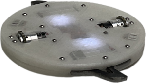
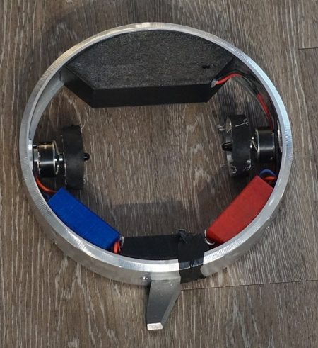

Meltybrain Robotics
What is a Meltybrain robot?
Often built with two drive motors, the meltybrain spins itself at high rotational velocities. The robot can move by modulating the drive motors. As the robot is spinning, when a motor is on one side of the robot it is pulsed a little faster and on the opposite side it’s pulsed a little slower. This modulation of motor powers provides a net drift. This control method is known as translational drift or tornado drive and is often used in combat robots where it is done to maximize the spinning mass.
When implementing a meltybrain control system, the robot must be able to obtain its orientation at all times while spinning at upwards of 3000 RPM. This poses a great design challenge as the rotational velocity that most meltybrains operate at is much higher than typical gyroscopes reading capabilities. Commonly accelerometer sensors are used in meltybrains to read the centripetal force, from which the rotational velocity can be calculated. This provides the rotational velocity; however, getting an absolute orientation also requires an external reference to prevent the heading from drifting. This is often done with an IR beacon or magnetometer.
Meltybrains in Combat Robotics
The main application for meltybrain technology is in combat robotics, where it allows the full weight of the robot to be put into the weapon. This allows the weapon to store more energy at a lower speed which increases the amount of energy it can put into the opposing robot.
Project Liftoff
Project Liftoff is one of the most successful meltybrains created; it has won an event at NHRL. Its robust TPU construction provides good protection from other robots. It also has a fully autonomous version, which uses a IR range sensor to find the opposing robot.
Halo
This robot is created from a large aluminum pipe. Building the robot as a ring allows the robot to store almost twice the energy as a similarly sized disk. The large aluminum ring also provides protection for the electronics.